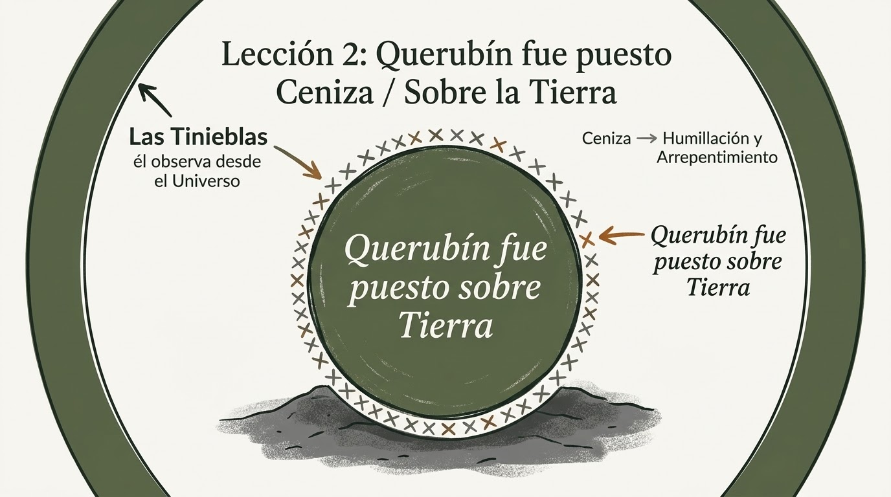

Lección 2: El Origen del Mal
Efesios 6:10 → Tengo que cubrirme con la sangre de Cristo.
La armadura de Dios: Yelmo (de la salvación), Coraza (de justicia), Cinturón (de la verdad), apresto (del evangelio de la paz), escudo (de la fe) y espada (del espíritu).
Debo vestirme con la coraza de justicia, ceñir mis lomos con la verdad (la palabra de Dios), calzarme los pies con el apresto del evangelio de la paz, tomar el yelmo de la salvación y tomar la espada del espíritu que es la palabra de Dios.
Satanás es un Imitador y Guerra Espiritual
Satanás imita a Dios: hace lo mismo que Dios, pero para lo malo (Efesios 6:12).
Ejército de Satanás
- Principados
- Potestades
- Gobernadores
- Huestes espirituales
Ejército de Dios
- Serafines
- Querubines
- Arcángeles
- Ángeles
Evangelio significa buenas nuevas, es decir, buenas noticias.
Mateo 4:1 • Ezequiel 28:1 • Judas 1:9
El mundo espiritual se mueve por rangos en la guerra espiritual. Nosotros somos hijos de Dios y nuestra autoridad es en el nombre de Jesús.
El Rey de Tiro y la Caída de Querubín
El profeta Ezequiel o hijo de hombre. Endechas: llanto, lamento, lloros, etc.
El rey de Tiro era la personificación de Querubín, es decir, se movía el mismo espíritu de satanás de rebeldía.
Ezequiel 28:12 → Tanto al rey de Tiro como a Querubín le va a dar una posición.
Querubín era el sello de la perfección, no la perfección. En el Edén estuvieron Adán, Eva y Querubín en forma de serpiente.
Ezequiel 28:2 → Querubín cayó por enaltecimiento, orgullo y soberbia.
¿Qué significa poner mi corazón como corazón de Dios?
Tomar mis propias decisiones, hacer mi voluntad.
Ezequiel 28:3 → Querubín sabía los secretos de Dios. Él es un imitador y copia todas las cosas de Dios.
El Primer Ministerio y la Rebelión
Querubín era el sello de la perfección creado por el mismo Dios. El primer ministerio empezó en el tercer cielo y el ministerio era la alabanza y adoración. Querubín fue creado con el propósito de adorar y servir a Dios; cuando Dios lo crea también le prepara algunos instrumentos (tamboriles y flautas) y lo capacita dándole talentos y dones para cumplir su propósito.
La música fue inventada por Dios para su adoración; sin embargo, satanás, que es padre de mentira, la destruye y la pervierte para influenciar a muchas personas con demonios y destruir el propósito de Dios.
2 Timoteo 2:14 • Romanos 11:15 • Hebreos 6:1
“Querubín grande y protector”: tenía rango y autoridad.
“Piedras de fuego”: simbolizan ángeles.
Caminos: cuando habla de caminos, es todo lo que pensamos y decimos.
“Hasta que se halló en él maldad”: en vez de confesar, renunciar y desarraigar esa semilla, él la alimentó y dejó que crezca.
Isaías 14:12 → “Estrellas de Dios” significa ángeles. Querubín en su corazón envidiaba a Dios, se rebeló contra Él con cizaña, con maldad; quería ser como Dios y sentarse en el trono de Dios.
La Sangre de Cristo Limpia Nuestro Pecado
La sangre de Cristo nos limpia de toda clase de pecado:
Hebreos 10:12 • Apocalipsis 1:5 • 1 Juan 2:2
Hebreos 9:14 → La sangre de Cristo limpia nuestra conciencia de obras muertas, lo cual permite al creyente servir a Dios.
1 Timoteo 3:6 → Cuando anhelamos servir en el ministerio, ese anhelo proviene del don que Dios puso en nosotros.
Presencia de Dios, Vida de Reino y Requisitos
El mundo estaba en el maligno y lo mismo pasa en el espíritu. Querubín hace lo que quiere, y toda injusticia es contada como pecado.
Si soy hija o hijo de Dios debo perdonar, y pedirle a Dios que Él ponga en mi boca lo que quiere que diga: que sea su voluntad y no la mía.
Isaías 23:13-18 • Ezequiel 28:13-14 → Querubín tenía rangos, era protector de las cosas de Dios, se paseaba en medio de las piedras de fuego y las estrellas del cielo (que simbolizan los ángeles de Dios), hacía contrataciones o "tratos" con los ángeles y estaba en el monte santo de Dios.
¿Se puede entrar a la presencia de Dios?
Antes no se podía, solamente los sacerdotes, los levitas y los profetas; pero vino Cristo y rompió el velo (Lucas 23:45). “Se enalteció y sacó fuego de en medio de ti”.
Vida de Iglesia
- “Por los frutos los conocerás”
- Es débil
- Depende de la circunstancia de la vida
Vida de Reino
- “Por los frutos se les conocerá”
- Vive para Dios
- Está en el espíritu
No se puede medir la fe, eso sería emoción.
Requisitos para entrar a la presencia de Dios
Salmo 24:3 → El limpio de manos y puro de corazón.
El que no sigue los mandamientos de Dios: guardá tu corazón porque de él mana la vida (no guardar mandamiento, no juzgar).
¿Qué sale de nuestra boca?
Bendición o maldición
Altar de Oración, Corrección y Caída de Querubín
Altar de oración — humillación: consigna de leer y hacer un resumen.
Hebreos 12:5 → No debemos menospreciar la corrección del Señor, porque al Hijo Amado se lo disciplina. Todo aquel que no recibe corrección no es hijo de Dios.
¿Cuándo no somos hijos, o no recibimos corrección?
Querubín no quiso recibir la corrección.
Ezequiel 28:16 → Fue creciendo en el descontento, la maldad y la rebeldía. Abrió su corazón a esto y pecó, por lo tanto ya no podía estar en el santo monte de Dios y fue echado.
Isaías 14:12-15 → Clave: en su corazón buscaba gobernar y sacar a Dios del trono, contaminando a los ángeles y trayendo rebeldía y descontento.
2 Juan 1:7-11 → Se rebeló contra la autoridad de Dios al dejar crecer la maldad en su corazón; esparció y contaminó con su lengua para desacreditar, presentándolo como mentiroso o malo y haciéndole dudar de su identidad, compromiso y posición.
Nadie es Indispensable: Querubín y Judas
Ezequiel 28:16 → No somos imprescindibles (“no somos la última Coca-Cola del desierto”). Dios nos dio libre albedrío y Él no se hace cargo de nuestros errores.
Querubín fue echado de la presencia de Dios, del ministerio y del reino porque se enalteció al creerse indispensable. Somos importantes y únicos, pero no indispensables.
Antes de que Querubín se rebele: Hermosura → intimidad y santidad.
¿A quién más le pasó esto? (Ejemplo: Judas Iscariote)
Hechos 1:20 → A Judas, que también se creía indispensable.
Ezequiel 28:18 → Querubín era un santuario de Dios
Dios le sacó su Espíritu Santo a Satanás.
Sin el Espíritu de Dios, Ceniza y Tinieblas
A partir de que Dios saca su Espíritu de Querubín, él se convierte en Satanás y empieza a manejarse por instinto.
Instinto en la persona: es la maldad (instinto salvaje y animal).
Juan 10:10 → Cuando no recibimos al Espíritu Santo ocurre algo similar: el diablo vino a matar, hurtar y destruir (matarnos espiritualmente, hurtar nuestra vida y proyectos, y destruir nuestra familia); Dios vino a darnos vida y en abundancia.
Ceniza: humillación y arrepentimiento. Querubín fue puesto sobre ceniza / sobre la tierra para que tenga la oportunidad de arrepentirse.
Ester 4:1 → Ejemplo (Mardoqueo): clamor de humillación y rasgar su vestidura.

Cuestionario N.º 2
1. ¿Dónde se originó el mal?
2. ¿Significa esto que Dios creó el mal?
3. ¿Cómo era el mal en el principio? (Ezequiel 28:11-16)
Anotar los atributos antes del mal.
4. ¿Qué se halló en él según Ezequiel 28:15?
5. ¿Qué cometió, según Ezequiel 28:16?
6. ¿Qué nombre le atribuye la Biblia, según Apocalipsis 12:9?
- a. Gran Dragón
- b. La Serpiente Antigua
- c. Diablo y Satanás
7. Según Apocalipsis 12:7, ¿siguieron a Satanás?
8. Según Apocalipsis 12:9, ¿aparte de Satanás, quiénes fueron echados con él?
9. ¿Para qué fue creado? (Ezequiel 28:13)
10. ¿Fue creado Satanás o se hizo?
11. ¿Por qué se lo llama espíritu inmundo?
Porque está en el 2.do Cielo.
12. ¿En qué consistió su pecado? Según Isaías 14:15-16
- a. Orgullo
- b. (completar según apunte)
- c. Soberbia
- d. Mentira
13. Cuando pecó contra Jehová Dios, ¿qué pasó con él? Según Ezequiel 28:16, Isaías 14:16
14. ¿Qué nombre se le da? Según Apocalipsis 13:11
15. En su Palabra, ¿la rebelión de quién es? ¿Por qué?
16. ¿Tiene fin el mal o no? Según Ezequiel 28:14
17. ¿Dónde será puesto el diablo con sus ángeles? Según Mateo 25:41
18. ¿Quiénes más van allí aparte de los ángeles?
19. ¿Cómo es el lugar? Según Apocalipsis 20:10
20. Según Apocalipsis 20:10, ¿es pasajero el tormento?
21. Según Apocalipsis 12:12, ¿cómo descendió a la Tierra Satanás?
22. ¿Será por mucho tiempo su reinado (de Satanás)?
23. Según Génesis 2, ¿dónde fue puesto? En las tinieblas.
24. Ezequiel 28:18, ¿qué sacó Dios de él?
25. ¿Cuáles son los libros centrales? ¿De este ser?